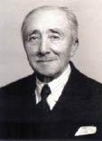

(1864 – 1944)

Türkiye'de romanı Hüseyin Rahmi Gürpınar başlatmamıştır, ama romanın tüm kitleler tarafından okunan ve sevilen bir edebiyat türü olmasında yazarın çok büyük bir payı vardır. Yazdığı romanlarda son derece gerçekçi karakterler çizen, halk ağzına yakın bir dil kullanan ve her zaman halkın ilgisini çekecek konuları bulup onları ustalıkla kaleme alan yazar. Türk romanının eskimeyen ve eskimeyecek yazarlarının başında gelir.
Türk romanının en üretken yazarlarından olan Hüseyin Rahmi Gürpınar, 17 Ağustos 1864 tarihinde İstanbul'da doğdu. Padişah yaveri Mehmet Sait Paşa'nın oğlu olan Hüseyin Rahmi, üç yaşında iken annesinin ölümü üzerine, Girit'te bulunan babasının yanına gönderildi. İlkokula başladı, ancak babasının evlenmesi üzerine altı yaşında tekrar İstanbul'a anneannesinin yanına gönderildi ve eğitimine burada devam etti. Çocukluğunun büyük bölümünü anneannesi, teyzesi ve komşu kadınlar arasında geçirdiği için daha çocukken onların bitmez tükenmez mahalle muhabbetlerini dinlemek, Hüseyin Rahmi'nin esin kaynağı oldu. Yakubağa Mektebi, Mahmudiye Ortaokulu'nda okuyan Hüseyin Rahmi, tarihçi Abdurrahman Şeref Bey'in himayesiyle Mekteb-i Mülkiye'ye girdi (1878). Bu dönemde bir yandan da özel dersler alarak Fransızca öğrendi. Okulun ikinci sınıfında iken ciddi bir hastalık geçiren Hüseyin Rahmi buradaki öğrenimini yarıda bıraktı (1880). Yazar çok küçük yaşlardayken yazmaya başladı; ortaokul öğrencisi iken on iki yaşında yazdığı Gülbahar adlı oyunu yangında kayboldu, "Bir Genç Kızın Avaze-i Şikayeti" adlı ilk yazısı ise Ceride-i Havadis'te yayımlandı (1884). Adliye Nezareti Ceza Kalemi'nde memur ve Ticaret Mahkemesi'nde aza mülazımı olarak çalışan Hüseyin Rahmi, Nafia Nezareti Tercüme Kalemi'nde çalışırken Meşrutiyet'in ilanı üzerine memurluğu bıraktı ve hayatını kalemiyle kazanmaya çalıştı. Hüseyin Rahmi'nin ilk romanı Şık (Ayine) Ahmet Mithat Efendi tarafından beğenilince Tercüman-ı Hakikat gazetesinde tefrika edilmeye başladı (1886).
1894'te İkdam ve Sabah gazetelerinde yazar ve çevirmen olarak çalışmaya başladı. İkdam'da arka arkaya yayımladığı altı romanla ünü birden arttı. Meşrutiyet döneminde Ahmet Rasim'le birlikte 37 sayı süren Boşboğaz ve Güllabi adlı bir mizah dergisi çıkardı (1908). Bu dergi yüzünden mahkemeye verildi ve beraat etmesine rağmen dergisi kapatıldı. İbrahim Hilmi Bey ile birlikte çıkardığı Millet gazetesi de uzun ömürlü olmadı. Bundan sonra çalışmalarını İkdam, Söz, Zaman, Vakit, Son Posta, Milliyet ve Cumhuriyet gazetelerinde yayımladı. Cumhuriyetin ilanından sonra, 1924 yılında yayımladığı Ben Deli miyim? adlı romanı yüzünden mahkemeye verildi, ancak bir kez daha beraat etti. Türkiye Büyük Millet Meclisi'nin 5. ve 6. dönemlerinde Kütahya milletvekili olan Hüseyin Rahmi, ömrünün son otuz bir yılını geçirdiği Heybeliada'daki köşkünde 8 Mart 1944 tarihinde vefat etti ve oradaki Abbas Paşa Mezarlığı'nda toprağa verildi.
Seçme Romanları: Şık (1989), İffet (1896), Mürebbiye (1899), Metres (1899), Şıpsevdi (1911), Kuyruklu Yıldız Altında Bir İzdivaç (1912), Gulyabani (1912), Hayattan Sayfalar (1919), Son Arzu (1922), Efsuncu Baba (1924), Ben Deli miyim? (1925), Billur Kalp (1926), Evlere Şenlik, Kaynanam Nasıl Kudurdu? (1927), Kokotlar Mektebi (1928/1929), Şeytan İşi (1933), Utanmaz Adam (1934), Gönül Bir Yel Değirmenidir, Sevda Öğütür (1943), Ölüm Bir Kurtuluş mudur? (1949), Dünyanın Mihveri Kadın mı Para mı? (1949), İnsanlar Maymun muydu? (1968), Ölüler Yaşıyor mu (1973), Namuslu Kokotlar (1973)